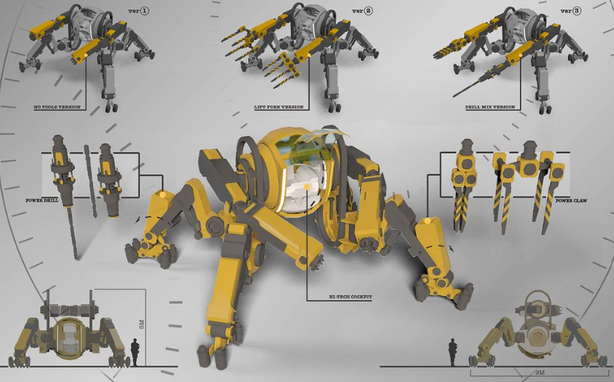
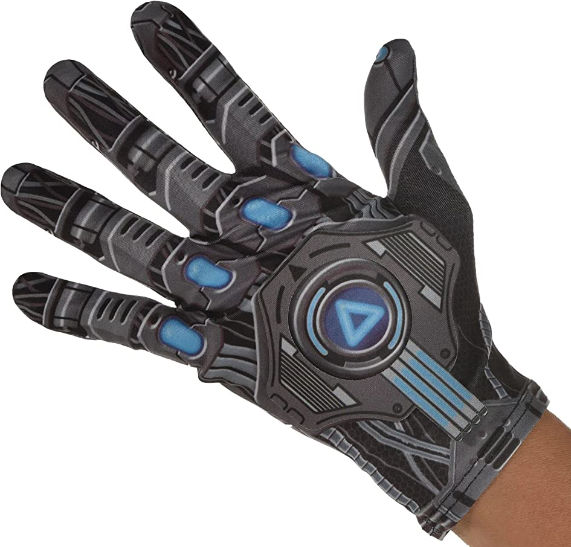

Software and Hardware
Hardware is something physical that you can control and softwares are basicaly apps that are easy to use for executing tasks. So what does the softwares and hardwares of construction look like currently?

Construction is something that started as far back as 400BC and Construction started with building shelters for humans to have a better living environment. Construction has been an important part of society for a long time because every building is a work of construction. This shows how construction is an important part of the world since without it we would have no shelter and no place to work. This is where my project comes in, the field of construction is a big topic and many workers have become injured or even died due to working in a construction field. My goal is to create something that can make construction an easier work and reduce the risk of injury and death, maybe even reduce it to zero if possible.
Hardware is something physical that you can control and softwares are basicaly apps that are easy to use for executing tasks. So what does the softwares and hardwares of construction look like currently?
Invented in 1904. Bulldozer also known as Dozer has many components that you could be used for operations and it is an earthmoving machine designed to push large quantities of rubble, soil, sand and other loose materials. It Can be used to clear land and for demolition (destroy and carry stuff) and even farming, the price ranges around $30,000 to $200,000. (Depends on their component)

Invented in 1933. Asphalt pavers are usually accompanied by dump trucks carrying asphalt, which moves the material into the paver. Once it’s full, the asphalt paver uses dispersion augers to disperse the asphalt across a leveled surface. Then, it rolls it flat with a hydraulic cylinder, creating a solid, stable place to drive or walk. Can be used to make roads and driveways by paving asphalt. (Hard to control/complicated function). Costs around $35,000 to $60,000. (Depends on their component)
Invented in 1944. Articulated trucks are hardwares that look like a heavy-duty dump truck and has great versatility and adaptability. They are ideal for applications on challenging worksites with little to no paved roads, steep slopes, slippery or sandy surfaces, or low ceiling height. It can also be used for many things like mining, recycling and hauling. Usually Costs around $15,000 to $200,000. (Depends on their component)
Invented in 1947. A backhoe loader is a single piece of equipment that can function as either a backhoe, a tractor, or a loader. The durable backhoe is located on the back of the machine, while the loading mechanism is in the front. The central operating machine is the tractor. (hard to control has many functions and controls to use or even move it. It is like trying to drive a car). Can be used on farming, excavation, construction, hauling and digging. Costs around $15,000 to $18,000 (Depends on their component)
Invented in 1951. Boom lifts are a type of aerial lift mechanism creating an aerial work platform. You might have also heard of it referred to as a basket crane or cherry picker or scissor lift. These attachments allow workers to reach elevated work areas but are not limited to only industrial or construction projects. Can be used to do things like painting, window cleaning and even fire fighting.
Smart Construction management software provides real-time updates on critical job site information and stores it in one place. Construction technology can help schedule, budget, and track everything happening at job sites, saving time, cost and application burnout. (Accessible on phone)

Builder Trend is an app that helps you set your project timeline, keep your budget up to date and share information with subs and clients all in one place. It inclides a built-in customer relationship management (CRM) system, bid requests, project proposals, plus more. Project management tools include scheduling, budgeting, timesheets, and more. Customer management tools include change order and selection management, warranty requests, and payment processing. (Accessible on phone)
This app helps manage projects, mainly designed for residential builders & trades. It has many systems that help you manage and control all your work. It is a easy-to-use estimating and project management for builders and contractors, it also helps you do takeoffs, create estimates, send quotes, track costs and sync accounting. (Accessible on phone)
What would the future of construction look like?
ui interface to select a tool you want to use and it will appear on your hand. It can also spawn large tools like bulldozers, and boom lifts, etc. (You have to aim it at open space to put the tool down)
#1 The VR head set of construction
#2 Construction robot
#3 Nano toolpack (glove form)
